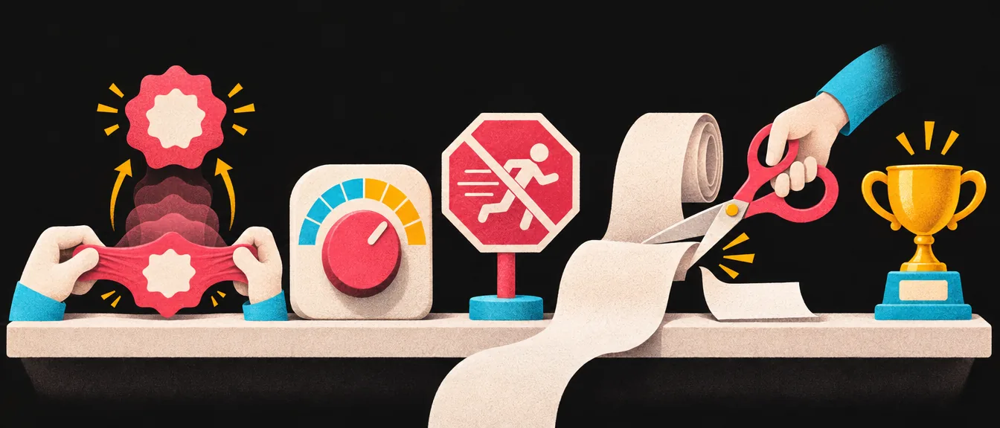
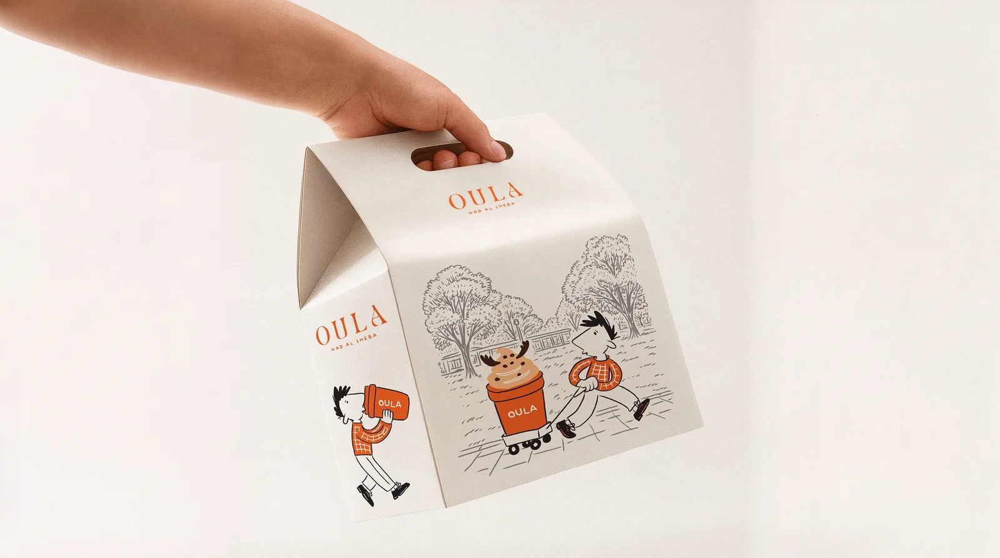
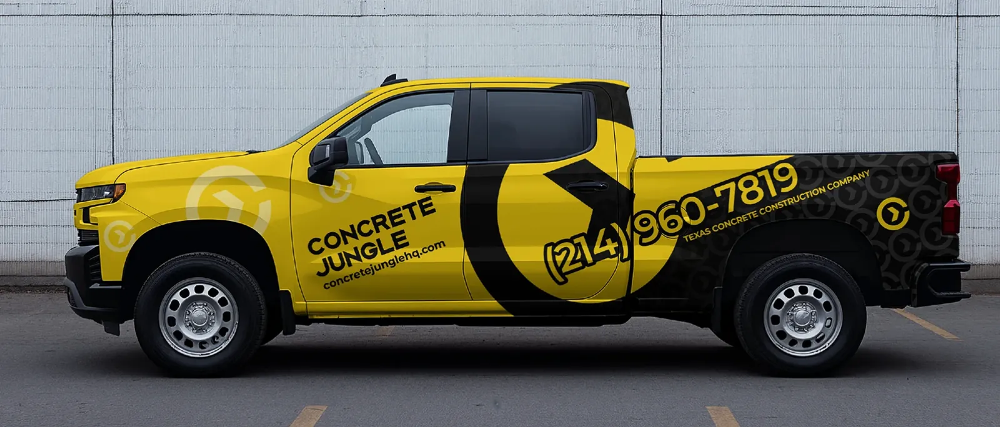
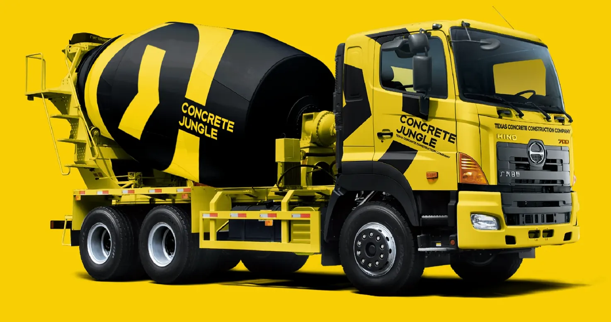
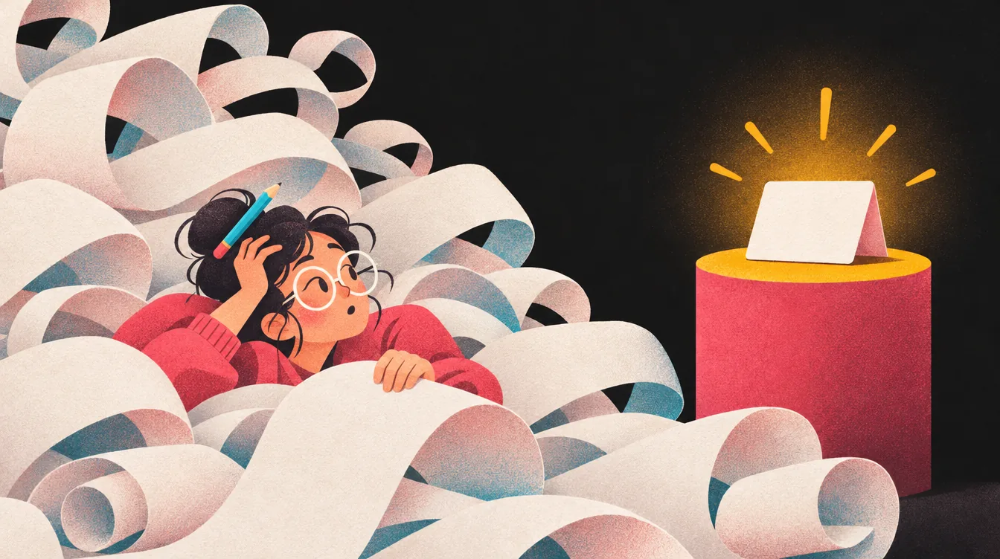
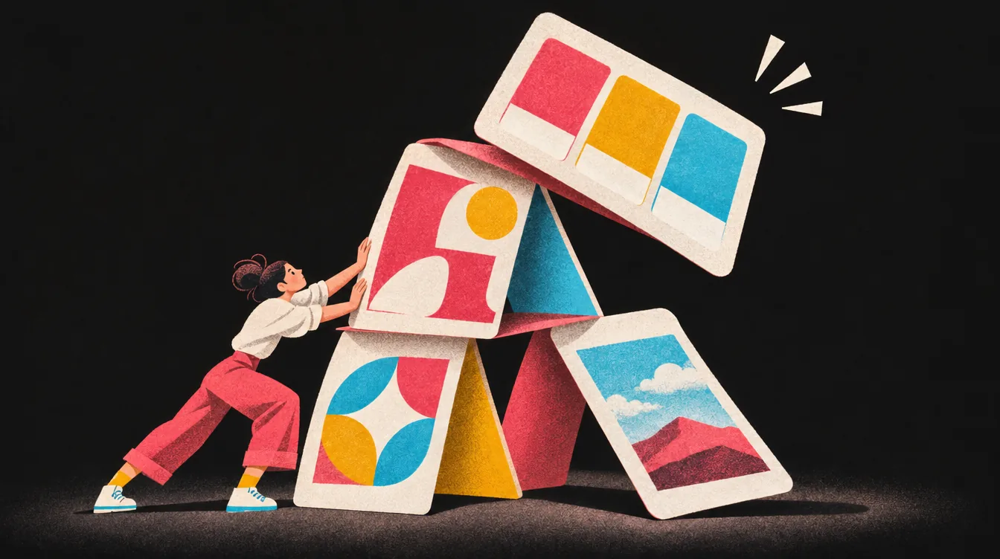

כללי זהב
כמה כללים קטנים שעושים הבדל גדול: לא מותחים, לא מתקנים קריאות באפקטים, לא שמים תנועה ליד טקסט, ולא חופרים. הם לא עניין של טעם. הם ההבדל בין עבודה שנראית מקצועית לעבודה שנראית כמו ניסיון ראשון.

גם בתמונות: לא מותחים
גם בתמונות, הימנעו ממתיחות או דחיסות לא טבעיות. אם צריך תיקון פרופורציות או התאמה למסגרת, השתמשו ב־Photoshop כדי לבצע זאת נכון, באמצעות חיתוך (Crop), מסכה (Mask) או התאמת פרספקטיבה (Perspective Warp).
והפתרון הכי טוב היום: להשלים את הרקע. במקום לחתוך את התמונה ולאבד חלקים ממנה, משלימים את הרקע מסביב למוצר, ב־Photoshop (מילוי גנרטיבי, Generative Expand) או בכלי AI אחר. אפשר גם לחתוך, אבל עם הטכנולוגיה שזמינה לנו היום, השלמת רקע עדיפה: התמונה מתאימה למסגרת, והמוצר נשאר שלם ובלי עיוות.


✕ מתוחתמונה ריבועית נמתחה למסגרת רחבה. הקופסה נראית שמנה, הדמויות רחבות והעיגולים הפכו לאליפסות. העין קולטת את זה מיד, גם אם לא יודעת להסביר למה.
ואם בכל זאת חותכים: מחליטים קודם מה החלק החשוב בתמונה, ומזיזים אותה בתוך המסכה עד שהוא בפנים. גם חיתוך עדיף בהרבה על מתיחה.
ובלוגו או בטיפוגרפיה? אותו כלל בדיוק, ושם יש עוד כמה פרטים: איך משנים גודל נכון, וכמה מתיחה עוד עוברת בלי שמרגישים. לא מותחים לוגו
קונטרסט מנצח יופי או אפקטים
אחד הסימנים למיתוג מקצועי הוא קריאות וניקיון ויזואלי, לא יופי מיותר או אפקטים נוצצים. אל תשימו טקסט בצבע שלא יוצר ניגודיות (Contrast) מספקת מול הרקע. אם אי־אפשר לקרוא, זה לא משנה כמה זה „מעוצב”.
לחצו על כל אחד משלושת השלבים כדי לראות אותו.
כללים חשובים
- הימנעו משימוש באפקטים כמו צללים, קווי מתאר, הבלטות או זוהרים. אלה פתרונות חובבניים שמסתירים בעיה במקום לפתור אותה.
- אם הטקסט לא קריא, שנו את צבע הרקע או את צבע הטקסט. זה הפתרון הנכון והמקצועי.
- אל תנסו „לעקוץ את המערכת” בכך שטקסט יישב חצי על רקע כהה וחצי על בהיר. זה לעולם לא באמת עובד טוב.
- תמיד תעדיפו קונטרסט נקי וברור: שחור על בהיר, בהיר על כהה, או צבעי מותג שמוגדרים מראש.
אתם יוצרים מיתוג חדש מאפס, אז אל תכניסו כבר מהשלב הראשון פתרונות חובבניים שיפגעו באחידות ובאיכות של השפה.
דוגמה של מה לא לעשות, ודוגמה טובה




רוצים מספר במקום תחושה? יש תקן לניגודיות, וגם כלי קטן שבודק אותו. בודק ניגודיות
הימנעו מ־GIFs ליד טקסט קריאה
בעת הצגת עמודי מיתוג או חומרים גרפיים, אל תמקמו אנימציות או GIFs זזים ליד טקסטים קבועים שאתם רוצים שיקראו. תנועה מתמדת מושכת את העין, מסיחה את תשומת הלב ופוגעת בקריאה, לא רק אצל אנשים עם בעיות קשב, אלא אצל כולם.
לא לשים הנפשות בלולאה כמו GIF ליד פסקאות טקסט שאתם רוצים שהצופים יקראו בנחת. זה קשה מאוד להתרכז בקריאה של פסקה כאשר יש משהו מקפץ, מרקד ומנצנץ בזווית של העין כל הזמן. זה מוציא מריכוז ומפריע.
בוקר · על המותג
בוקר היא מאפייה שכונתית שאופה כל לילה ופותחת בשש. השפה העיצובית שלה נשענת על כתום חם ועל קרם של בצק, על איורי קו פשוטים שנראים כמו רישום בעיפרון, ועל פונט עגול וידידותי. המטרה הייתה שהמותג ירגיש כמו השכנים שמכירים אתכם בשם, ולא כמו רשת. לכן אין בו זהב, אין בו שחור, והלוגו הוא שמש קטנה שעולה מעל קו האופק.
טקסט מיועד לקריאה. אנימציה מיועדת למשוך תשומת לב. כששני האלמנטים האלה מתחרים זה בזה, המסר הולך לאיבוד.
אם רוצים להציג גם תנועה וגם תוכן, עדיף להפריד ביניהם, למשל:
- עמוד אחד עם אנימציה, עמוד הבא עם טקסט הסבר.
- או ליצור הפסקת תנועה (Loop קצר שעוצר) בזמן קריאת הטקסט.
כל שאר ההדגמות במדריך הזה עומדות במקום עד שלוחצים: אתם מעבירים אותן שלב אחרי שלב, בקצב שלכם, וחוזרים אחורה מתי שרוצים. זה גם מה שתקן הנגישות מבקש: כל תנועה שנמשכת יותר מחמש שניות צריכה דרך לעצור אותה. וכאן אין מה לעצור, כי שום דבר לא זז מעצמו.
הימנעו מחפירה

אל תכתבו מגילות על המותג שלכם. התחילו תמיד עם משפט פתיחה אחד קצר ותמציתי שמסביר מה המותג עושה או מייצג, ובהמשך המסמך אפשר להמשיך ולהעמיק בפרטים.
בהמשך תוכלו להוסיף מידע על בחירת הצבעים, הפונטים, הסיפור של המותג, החזון והערכים: כל מה שעוזר להבין את האישיות והכיוון של המותג.
המותג שלנו נולד מתוך חלום ישן ומתוך תשוקה עמוקה לחבר בין עבר להווה, בין מסורת לחדשנות ובין האדם לסביבה שבה הוא חי. לאורך כל תהליך העבודה התעמקנו בשאלות של זהות, של שייכות ושל משמעות, ובחנו כיצד צורה, צבע וטיפוגרפיה יכולים לבטא ערכים של חום, אותנטיות, קהילתיות ואחריות, תוך שמירה על איזון עדין בין הרצון לבלוט לבין הרצון להיות נגיש לכל אחד ואחת. את ההשראה מצאנו בשעות הקטנות של הלילה, באור הראשון של היום, בריח של עבודת כפיים ובזיכרונות ילדות מהשכונה, וכל אלה התנקזו לשפה חזותית שמבקשת לספר סיפור רחב, רב־שכבתי ומלא רגש, שבו כל פרט קטן נושא משמעות, וכל החלטה עיצובית היא בעצם שאלה פילוסופית על הקשר בין מה שאנחנו רואים לבין מה שאנחנו מרגישים כשאנחנו נכנסים בפעם הראשונה למקום שמרגיש לנו כמו בית, ועוד לפני שהבנו בכלל למה…
בוקר היא מאפייה שכונתית שאופה כל לילה ופותחת בשש.
ובהמשך המסמך, בנחת ובמינון נכון:
- הצבעים
- הפונטים
- סיפור המותג
- החזון והערכים
אבל זכרו: מטרת הטקסט היא להאיר את העיצוב, לא להטביע אותו במילים. תנו לקהל להבין מהר, להרגיש את הרעיון, ואז, אם בא לכם „לנפח” קצת עם הסברים או פילוסופיה עיצובית, תעשו את זה במינון נכון ובטעם טוב.
תרגיל טוב למשפט הפתיחה: איך המותג היה נשמע אם היו לו רק 40 תווים להגיד בהם משהו לעולם. שפה תקשורתית
15 טעויות שהורסות מותג

עד עכשיו דיברנו על כללים בתוך העמוד. אלה הטעויות הגדולות, אלה שמותגים אמיתיים, גם ענקיים, משלמים עליהן ביוקר. רובן לא קורות בפוטושופ אלא הרבה לפני.
- לעצב לפני שיש אסטרטגיה
פותחים אילוסטרייטור לפני שיודעים למי המותג מדבר ומה הוא מבטיח.
אסטרטגיה - חוסר עקביות בין נקודות המגע
האתר נראה כמו מותג אחד, האינסטגרם כמו מותג אחר, והשלט כמו שלישי.
מה זה מיתוג - להתעלם מקהל היעד
מעצבים לטעם של הלקוח, או לטעם שלכם, במקום לאנשים שהמותג רוצה להגיע אליהם.
קהל ומיצוב - לרדוף אחרי טרנדים
מה שאופנתי השנה ייראה מיושן בעוד שלוש. מותג צריך להחזיק שנים.
- לא לכתוב את החוקים
בלי ספר מותג, כל מעצב שיבוא אחריכם ימציא את השפה מחדש.
ספר מותג - להעתיק את המתחרים
להיראות „נכון לתעשייה” זה בדיוק מה שמעלים אתכם בין כולם.
מחקר מתחרים - לשכוח שרוב הקהל בטלפון
לוגו שלא עובד כתמונת פרופיל קטנה, או באנר שלא נקרא במסך של טלפון.
פרסום דיגיטלי - קול שמשתנה בין ערוצים
רשמי באתר, מתחנחן באינסטגרם, יבש בניוזלטר. הקהל מרגיש שזה לא אותו אחד.
טון דיבור - לא להקשיב ללקוחות
מה שהקהל אומר על המותג הוא המידע הכי חשוב שיש. מתעלמים ממנו על אחריותכם.
- לסבך את הזהות
יותר מדי צבעים, פונטים ופרטים. מותגים חזקים נוטים להיות פשוטים, ופשטות נזכרת.
פשטות - להתעלם מציפיות לקיימות
אריזה מוגזמת או מסר שלא מתיישב עם מה שהקהל מצפה ממותג היום.
- מיתוג מחדש בלי סיבה
משנים זהות כי „נמאס”, ולא כי יש בעיה אסטרטגית לפתור. גאפ וטרופיקנה למדו את זה בדרך הקשה.
פרק הלוגו - לשנות הכול בבת אחת
לוגו, צבע, שם ואריזה ביום אחד. הקהל הקבוע פשוט לא מזהה את המוצר על המדף.
- לחשוב שמיתוג הוא רק עיצוב
מיתוג הוא כלי אסטרטגי וניהולי: איך המותג נראה, מדבר ומתנהג.
מה זה מיתוג - לוגו חלש
לוגו שלא עובר את מבחני החובה: בלי צבע, בקטן, בגלילה מהירה.
מבחני הלוגו